Getting Started¶
Since the launch of the Xbox 360 there have been many ways to run unsigned code. Here is a brief history of different modifcations to the 360.
A few of the first exploits were found using the consoles disc drive. Flashing the drive with a custom firmware made reading backup games possible. The King Kong or “KK” exploit uses a modified shader to patch King Kong allowing the 360 to boot into Linux. Although it is only possible on very early dashboard versions 4532 and 4548.
The J-TAG or “SMC” hack was released in 2007. By soldering a couple diodes, a jumper wire and writing a modified SMC the console is able to boot into a modified state. In 2009 the J-Tag exploit was patched in dashboard version 7371. Finding consoles on 7371 or below is rare.
Since then the Reset Glitch Hack or “RGH” was found by GliGli and devs around 2011. The Reset Hack Glitch hack works by sending a small pulse from a modchip to the reset signal of the CPU to “glitch” the console. This method requires timing a modchip, running a few wires and writing a custom nand image to the console. RGH is supported on many dashboards and works on most consoles.
Here is a post by 15432 that goes in depth on how the Reset Glitch Hack works.
There have been many revisions to the J-Tag and Reset Glitch Hack. This doc references the Reset Glitch Hack 1.2 and S-RGH methods created by 15432.
Warning
Attempting these modification can permanently damage the console! Proceed with caution! Connecting to Xbox Live will most likely ban the console. Please don’t pirate games, support the developers and local game shops.
Console Revisions¶
Their are three main revisions of the Xbox 360 released from 2005 to 2016.
Launch¶
The original launch model of the 360 also known as a phat. Their are five revisions to the phat motherboards. iFixit Teardown
Xenon
Zephyr
Opus
Falcon
Jasper
Consoles with Falcon or Jasper motherboards work great with this method.
Xenon/Opus Non-Hdmi and Zephyr Hdmi motherboards aren’t fully supported with this method
Slim¶
The Slim or “S” model is the second revision of the 360 and introduced the XCGPU an integrated CPU and GPU. Slim consoles come with either a Trinity or Corona motherboard. iFixit Teardown
Slim E¶
The final revision of the 360 came with either a Corona or Winchester motherboard. Only Corona motherboards are able to be modified. iFixit Teardown
Consoles with Hdmi except for the Phat Zephyr and Slim E Winchester revisions are supported.
Motherboard Identification¶
Next find which revision & motherboard the console has.
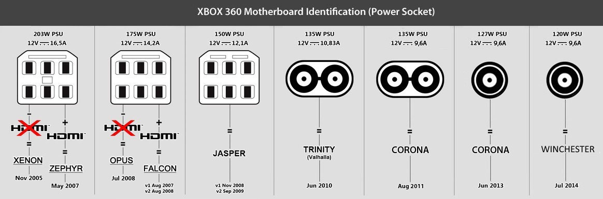{kind=link}
{kind=link}
The diagram above should help identify your motherboard from the power rating and socket type.
Note
If the motherboard is a Corona there are four revisions. V1 doesn’t require a post-fix adapter but V2-V4 needs one aswell as the resistor points bridged look Here to confirm the motherboard revision.
{kind=link}
Certain Corona motherboards come with a 4gb eMMC nand which requires either an sd card tool or an XFlasher to read and write the nand. Here is a guide on reading & writing 4gb nands by WeekendModder.
Hardware & Software¶
Software¶
There are many programs that modify and create nand images and files for the Xbox 360. This guide focuses on J-Runner and its many functions.

J-Runner w/ Extras by Octal450 has many capabilities for reading & writing nand images. Also has a built in modchip programming section with support for many chips and tunings.
Download: J-Runner w/Extras by Octal450
Timing Files¶
Hardware¶
Necessary Hardware & Supplies
Soldering iron, solder, flux along with 26-30AWG wire
Modchip: X360 Ace V3, CoolRunner revC or Matrix Glitcher
SPI & J-TAG Programmer/NAND flasher: JR Programmer, NandX, Xflasher
PC running Windows XP-11
Micro/Mini-B/C USB cable
Motherboard Specific Parts
22k resistor (Phat Motherboards)
Postfix adapter (Slim Corona Motherboards only)
4gb CoronaSD Card Tool or XFlasher (Slim 4gb Corona Motherboards)
Programmer/Nand Flasher¶
A programmer is a key piece to read & write to the consoles nand. Most programmers also have the capability to flash timing files to a modchip.
XFlasher360¶
A new nand flasher developed by Element18592 and devs. Faster read & writes than the JRP and NandX. Also supports 4gb eMMC Corona nands.
JR-Programmer¶
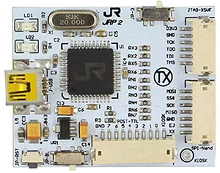The JR-Programmer was originally made by Team Xecuter but clones are still available.
Nand-X¶
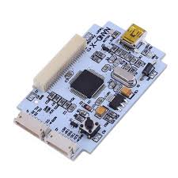Another Team Xecuter device that is a bit faster than the JR-Programmer.
Matrix SPI Programmer¶
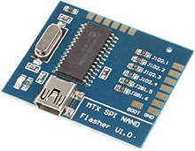Stable read & writes and can be modified to program modchips.
LPT Cable¶
Alternatively using a lpt connector and parrallel port on an older PC its possible to create a diy nand reading cable. Here is a guide by William Quade on how to put one together. This method is slower compared to using one of the programmer.
JR-P and NandX drivers located in the J-Runner download. J-Runner>common>drivers(may need to disable driver signature enforcement to install) Xflasher are located in the J-Runner menu.
Modchips¶
The modchip or glitch chip is a key piece to making the console boot console into a modified state.
Here is a few Xilinx based modchips that work great with this method.
X360 Ace V3¶
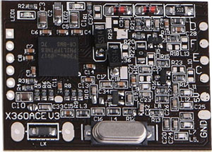Great chip also supports dynamic tuning files.
Recommended for Slim consoles with the S-RGH method
CoolRunner RevC¶
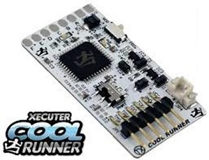Originally made by Team Xecuter but clones are still available.
Matrix Glitcher¶
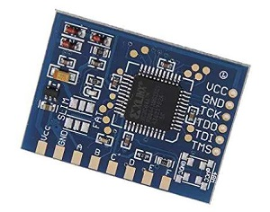Another great modchip consistent boot times.
All of these chips achieve the same results. The Coolrunner and Matrix chips require soldering a smaller clock point on the motherboard.
Resources¶
Here are a few sites with all kinds of info, updates & parts.

Nand Reading¶
Getting a few backups of the consoles stock nand is crucial part of this process.
Not only is it needed to create a modified nand image, it can be used to return the console back to an unmodified state. The Nand stores the consoles cpu & dvd keys, fuse sets and critical system data. Here is a page that breaks down how the nand is formatted from a factory state and how it is modified.
Most motherboards have 16mb Nand, but some Jasper motherboards have larger 256 or 512mb nand chips called a “Big Block Jasper”. It can take significantly longer to read the consoles nand.
V2 and V4 Corona motherboards come with a 4gb eMMC nands which requires either an sd card tool or an XFlasher to read and write the nand. Check here to bridge the resistor pads if neccessary depending on revision. Here is a guide on dumping 4gb nands by WeekendModder.
These next few steps will show where to solder the read & write wires and how to read the nand from the console.
Warning
Attempting this modification can permanently damage the console! Proceed with caution!
Nand Read & Write¶
Here is the 7-wire SPI-Nand reading cable that comes with most programmers.
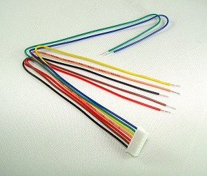You may need to trim/strip the ends of this set of wires depending if they have connectors or not
The Nand Read/Write header location in red.

Launch Model
All Phat consoles have the same read & write header location.
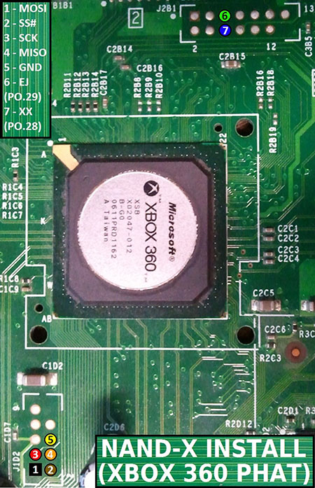
Slim Model
Since the slim consoles came with either a Trinity or Corona motherboard, the header points are oriented a bit different.
Trinity
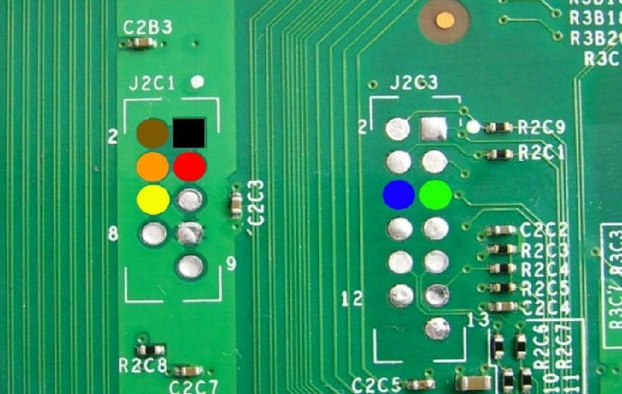Corona
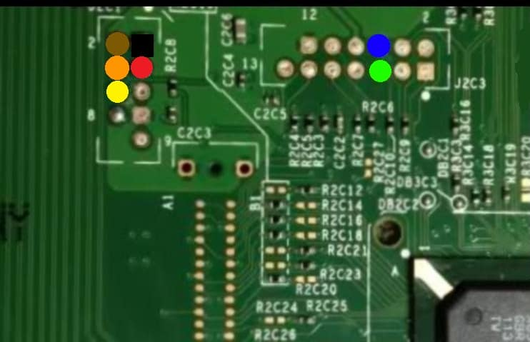
After the read & write wires are installed its time to read the consoles Nand.
Connecting to the console¶
Open J-Runner then move over to the console. Connect the nand r/w wires to your programmer. Here are the SPI-Nand connector on the XFlasher and JR-Programmer.
XFlasher
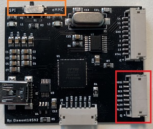Be sure to turn the switch in orange to SPI mode for non eMMC nands
JR-Programmer
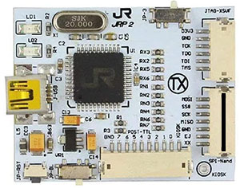Connect power to the motherboard and the nand read & write wires to the programmer.
Warning
Do not turn the console on it can cause damage to both the console & programmer!
Connect a usb cable to the programmer and if the drivers installed correctly you should see the programmers icon in J-Runner shown below.
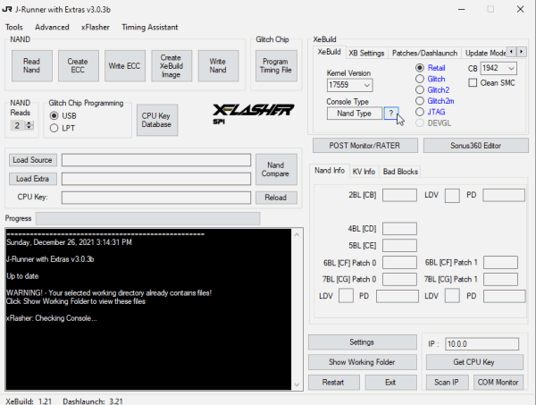After getting everything connected ensure the console is connected to power but not turned on.
By default J-Runner has two Nand reads preselected.
Click “Read Nand”
It may take a few minutes to read the nand, any bad blocks that may occur J-Runner remaps them automatically.
If any errors come up ie. “Device/Console Not Found” or “Flash Config” check the connections to the motherboard and programmer.
Note
Keep these files safe! The “Show Working Folder” button in the bottom right is the default location for any files created & edited within J-Runner.
Once two nand reads are successful, it’s time to create the ECC.
ECC Images¶
The ECC or “Error Detection/Correction Code” section of the Nand processes the startup of the console. Once the ECC is created and written a part of the nand will be overwritten with a bootloader called XeLL.
XeLL or “Xenon Linux Loader” is a Linux based bootloader allowing access to the consoles CPU/DVD keys, fuse sets and other critical system information. The CPU key is needed to build a modified nand image called Freeboot. Here is a page that explains more about XeLL and it’s functions.
Creating & Writing ECC Images¶
Make sure “Dash Version” is set to 17559 and your motherboard revision is correct.
Select Glitch2 in the XeBuild section
Click “Create ECC”
Click “Write ECC”
Note
When clicking the “Create ECC” button it may ask to load a nand dump. Navigate to the nandump1.bin from the nand read. It may be there if J-Runner hasn’t been closed.
After the ECC is finished writing disconnect the programmer from the r/w wires on the motherboard along with the power cables.
Modchip Timing¶
The modchips use a Xilinx based chip, flashing specific .XSVF and .SVF timing files to boot the console.
To program the modchip either solder or use a pin header to connect the xsvf cable to the programmer.
The middle 6 wire J-TAG-XSVF cable is needed to connect the modchip to the programmer.
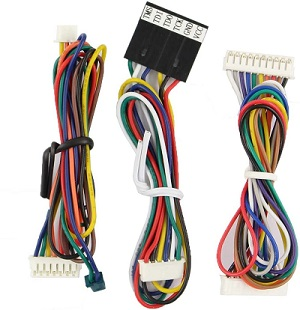Here is a picture of the program points for the X360 Ace V2.
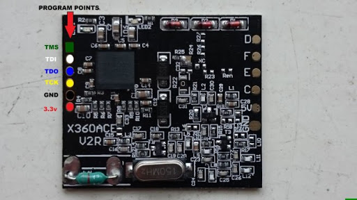This is the CoolRunner chip which has a presoldered pin header
Timing the Modchip¶
In J-Runner select the advanced menu and click on “Custom Nand/Timing File Functions”
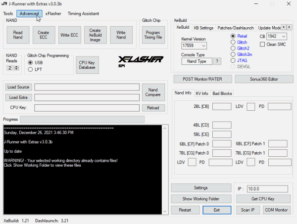Select XSVF/SVF on command selection
Click “…” navigate to your RGH 1.2 timing files from links above
Click “Run” to write the file
From here finding the timing file for each console is different. Below are a few files to start with.
Phat Timing Files¶
RGH 1.2 V2 by Octal450 Release
Octal450 RGH 1.2 V2 Here
- Navigate to RGH1.2 V2>x360ace-dgx for Ace V3/DGX | RGH1.2 V2>Matrix-Coolrunner for Matrix & Coolrunner
Start with: rgh12_21_v2.svf file
RGH 1.2 15432 Release
15432 RGH 1.2 Release Here
- Navigate to rgh12>try_these_first>ace_dgx for Ace V3 & DGX | rgh12>try_these_first>matrix for CoolRunner & Matrix
Start with: rgh12_21.xsvf
Slim S-RGH Timing Files¶
Trinity
Corona
Alternatively you can use the built-in Timing file programmer part of JRunner. This section has a collection of reliable timings for each motherboad.
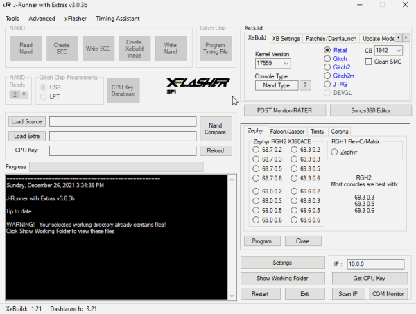Note
Every console is different, you may have to flash a few different timing files to see what achieves a reliable boot cycle. For Falcon and Jasper consoles with an AceV3 use the dynamic tuning file if you can’t get the console to boot.
Modchip Installation¶
Wiring up the motherboard is the most difficult part of this whole process. Some points are very small so take your time clean your points and use flux.
A good location for the modchip is on the a/v shield shown below or under the disc drive on slim consoles.
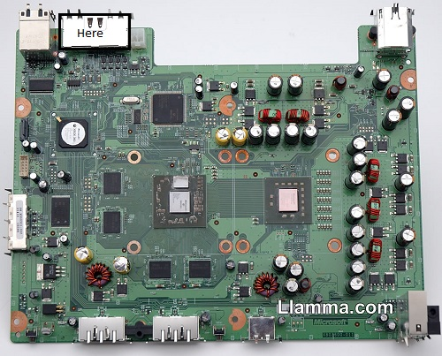Modchip Wiring¶
Here are a few diagrams for wiring up the Phat motherboards
Phat Wiring¶
{kind=link}
{kind=link}
{kind=link}
Slim Wiring¶
Here are a few diagrams Trinity/Corona Slim Motherboards
X360 Ace V3 Corona V1/V2
{kind=link}
X360 Ace V3 Corona V3/V6
{kind=link}
Once the modchip is wired in, its time to boot into XeLL to get the consoles CPU key.
Launching XeLL¶
Connect power to the motherboard, plug in fans and ring of light board.
Power on the console and it should start up into XeLL. If the console takes longer the +/- 60 seconds or so try flashing a different timing file. For Falcon and Jasper Consoles with an Ace V3 try flashing the dynamic tuning file.
After a few seconds Xell will initialize the system and output the fusesets and CPU/DVD keys.
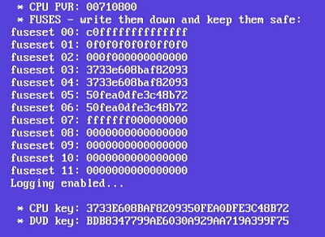Write down the CPU key, it is needed to create a modified image with XeBuild in the next step.
As XeLL starts a http server is started, connecting the console via ethernet and enter the local IP address into a web browser, the CPU/DVD keys along with options to download raw flash, key vaults and fuse sets.
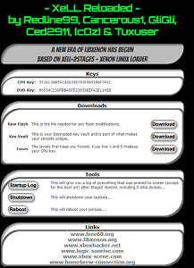Once the cpu key is saved power off the console but keep it connected to power
Modified Nand¶
After booting into XeLL and retrieving the CPU key, its time to make a modified Nand image with J-Runners XeBuild function. Creating a modified Nand is also reffered to as a FreeBoot image.
XeBuild Image¶
Open J-Runner and select one of your nand dumps by clicking “Load Source”
It may be there automatically if J-Runner hasn’t been closed

Select “Glitch2”
Select 17599 Dash Version
Enter CPU Key
Click “Create XeBuild Image”
Once xeBuild finishes its time to write the final image to the console
Click “Write Nand”
After J-Runner is done writing unplug the power and the programmer from the motherboard.
Wait a minute or so then turn the console on and if all went well the console will boot up to the stock dashboard.
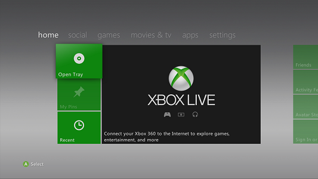After the initial startup power down the console and press the eject button it should now load into Xell.
Note
Turning on the console via the eject button will only boot in to Xell.
Useful Applications¶
After the console is booting it’s time to install apps run homebrew backup a game or try running linux.
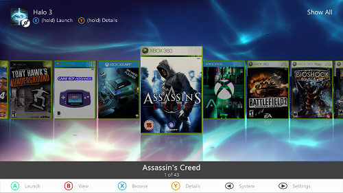This is Aurora an alternative dashboard with some emulators, homebrew and a few games on the hard drive.
Applications
XeXMenu- File & Backup manager Here
Dashlaunch- Allows changes to boot settings, configure temperature controls and other system options similar to a computer bios Here
Xbox Compatability Fixer- Reconstructs the partition that enables a modified emulator to play original Xbox games Here
Aurora alternative dashboard Here
Credits¶
Many thanks to GliGli, 15432, Octal450, Weekend Modder, Se7enSins, Mr.Mario2011, JoinTheResistance, Element18592, TX, Evan Amos for developing and researching this process.
The Xbox 360 is a trademark of Microsoft. No piracy intended or supported.